[NH] Issue thread for NH late updates beginning 9/27
Issue number 872
the-daniel-lin opened this issue on September 28, 2020 at 1:51 pm
Labels Data quality stale Backfill
State or US: New Hampshire
Describe the problem NH sometimes updates after our daily publication time, so we don’t end up collecting their data the day of. Beginning 9/27, this issue thread will log all of the backfills due to NH late updates.
Backfilled dates in this issue: 9/27, 9/30, 10/4, 10/14, 10/20, 10/23, 11/11, 11/13, 11/24
Previous backfill dates include: , https://github.com/COVID19Tracking/issues/issues/807 (9/01), https://github.com/COVID19Tracking/issues/issues/821 (9/9), https://github.com/COVID19Tracking/issues/issues/855 (9/21)
Link to data source https://www.nh.gov/covid19/
Comments
AFTER 9/27: 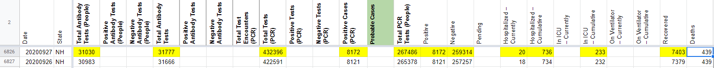
BEFORE 9/30: 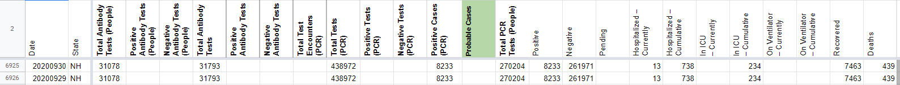
AFTER 9/30: 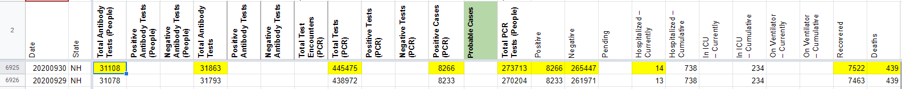
BEFORE 10/4: 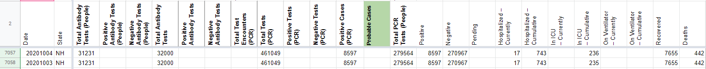
AFTER 10/4: 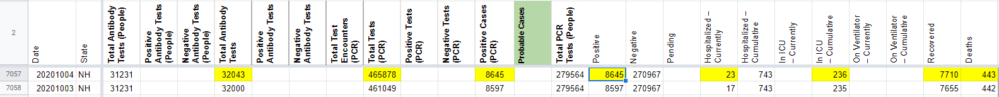
On 10/4, NH removed the testing by individuals from their website. As a result, we’ve carried over the values for Total Antibody Tests (People), Total PCR Tests (People), and Negative.
** UPDATE 10/5 ** Total Antibody Tests (People) and Total PCR Tests (People) values returned with the 10/5 update.
BEFFORE 10/5: 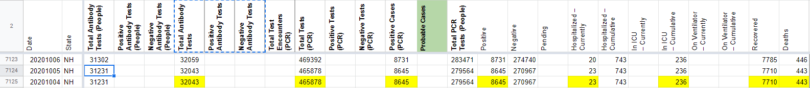
AFTER 10/5: 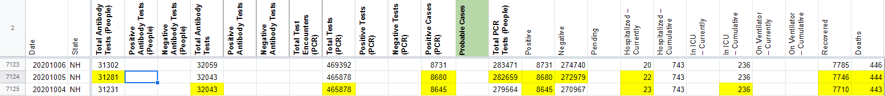 ** UPDATE 10/5 ** Total Antibody Tests (People) and Total PCR Tests (People) values returned with the 10/5 update. NH seems to have skipped the 10/5 update for the Interactive Dashboard (https://www.nh.gov/covid19/dashboard/overview.htm#dash) and the Summary Dashboard (https://www.nh.gov/covid19/dashboard/summary.htm) . As a result, We are carrying over Antibody Tests (People), Total Tests (PCR), and “Cumulative in ICU.”
BEFORE 10/14: 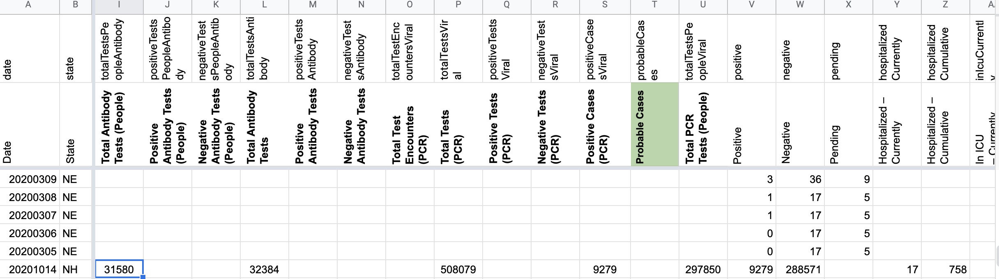 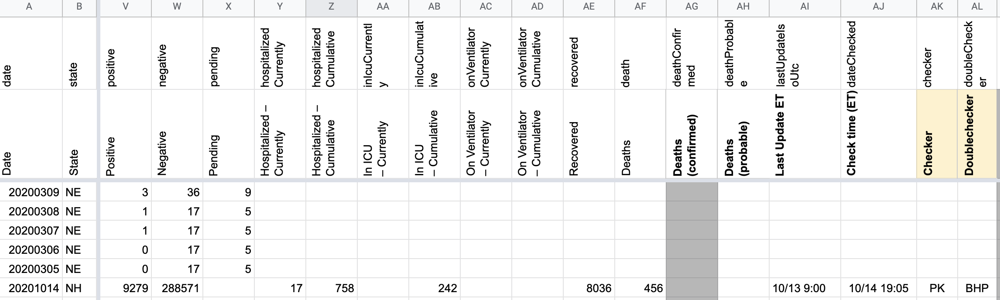
AFTER 10/14: 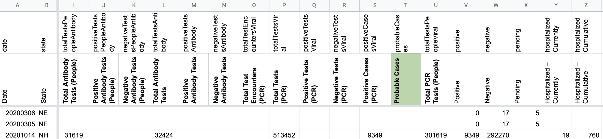 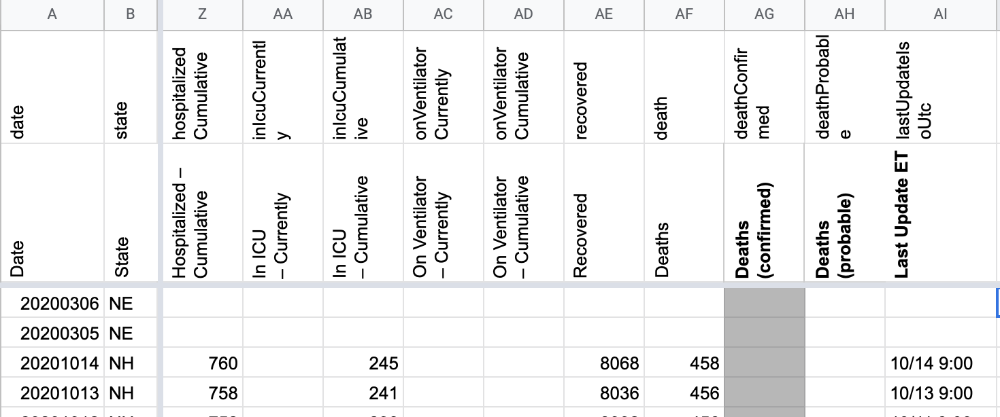
On 10/14 NH updated after we published. I patched that late update.
BEFORE: 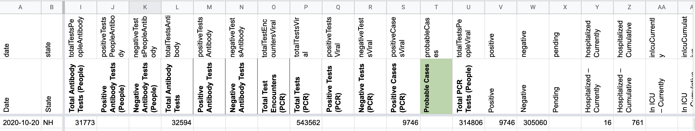 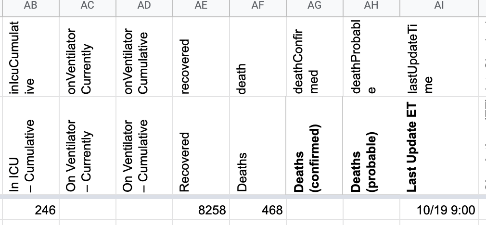
AFTER: 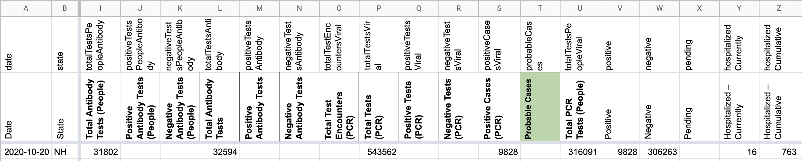 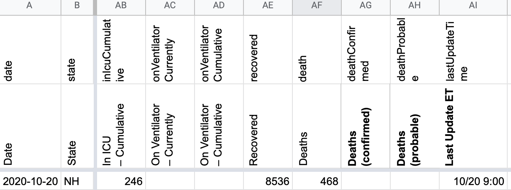 On 10/20 NH updated after we published, I patched that late update.
BEFORE: 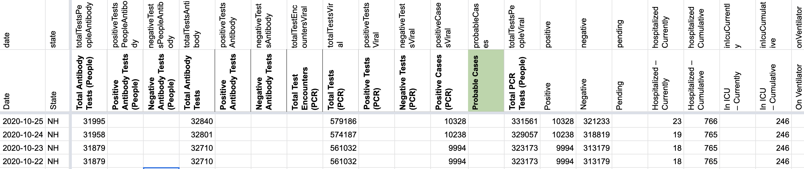 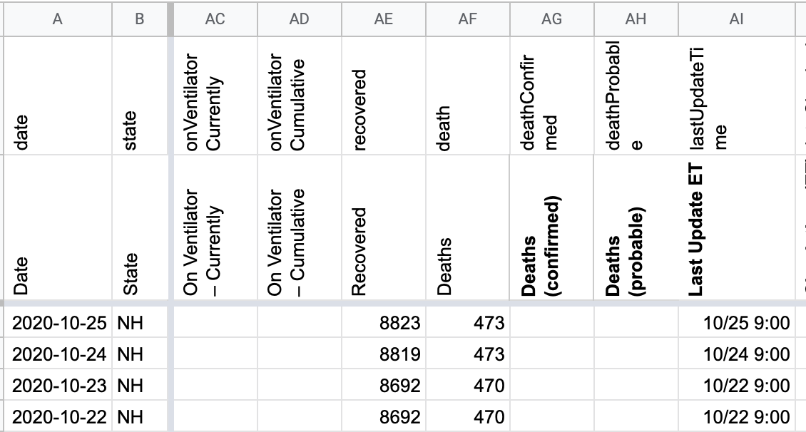
AFTER: 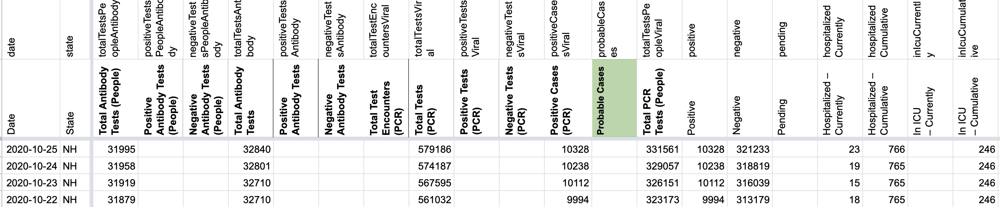 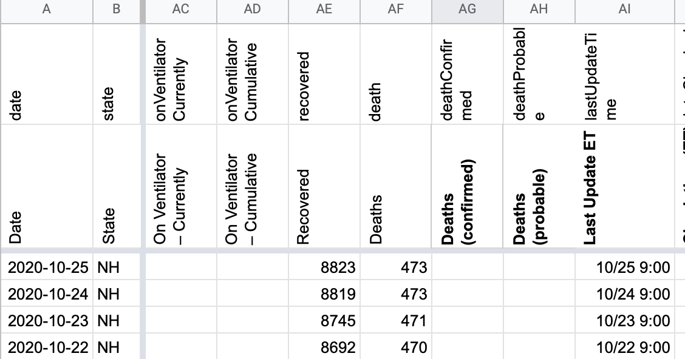
On 10/23 NH updated after we published. I patched that late update
This issue has been automatically marked as stale because it has not had recent activity. It will be closed if no further activity occurs. Thank you for your contributions!
BEFORE 11/11:
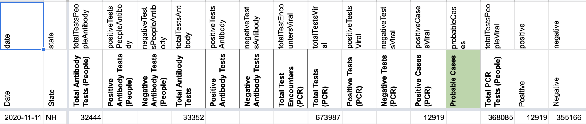 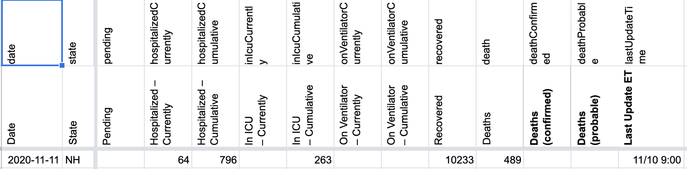AFTER 11/11: 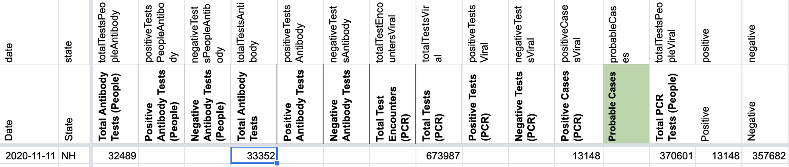 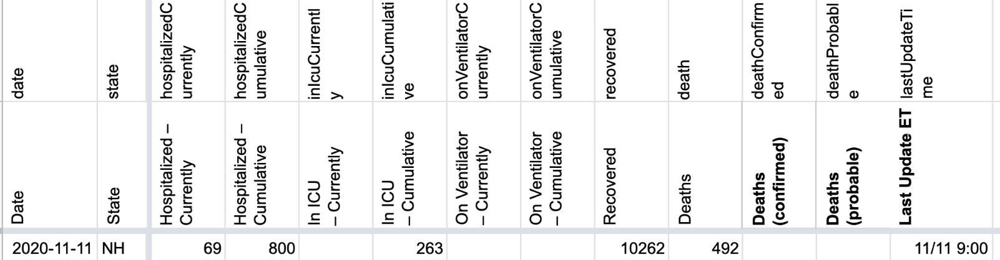
All metrics were patched except for Total antibody tests (specimens), Total PCR tests (specimens), and cum. icu as the NH dashboard were experiencing technical difficulties.
BEFORE 11/13: 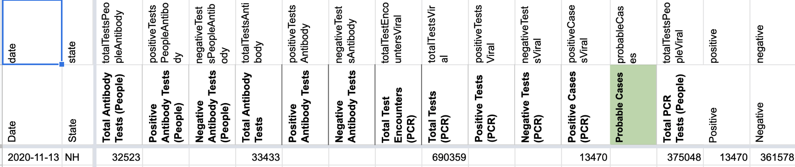 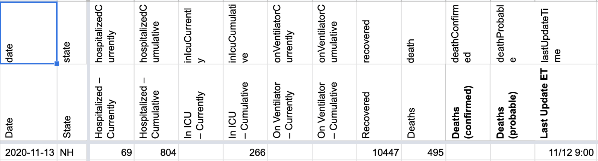
AFTER 11/13: 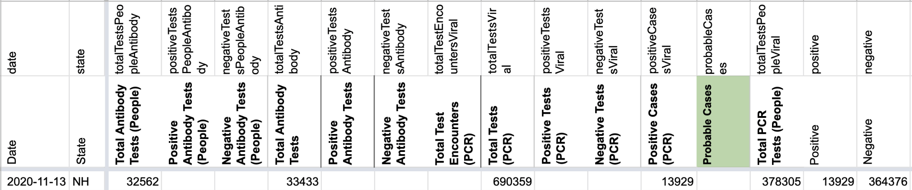 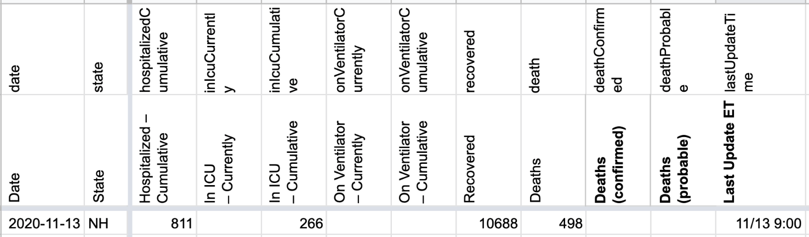
All metrics were patched except for Total antibody tests (specimens), Total PCR tests (specimens), and cum. icu as the NH dashboard were experiencing technical difficulties.
11/24: Rows edited: 1 NH 2020-11-24 positive: 18382 (was 18042) negative: 389286 (was 388185) hospitalizedCumulative: 832 (was 831) inIcuCumulative: 276 (was 277) recovered: 13558 (was 13226) death: 513 (was 512) totalTestsViral: 775598 (was 770791) positiveCasesViral: 18382 (was 18042) totalTestsPeopleViral: 407668 (was 406227) totalTestsAntibody: 33949 (was 33915) totalTestsPeopleAntibody: 32967 (was 32939) positiveTestsPeopleAntigen: 2962 (was 2830) lastUpdateTime: 2020-11-24 14:00:00+00:00 (was 2020-11-23 14:00:00+00:00) dateChecked: 2020-11-25 18:15:00+00:00 (was 2020-11-24 23:46:00+00:00) checker: RSG (was DZL) doubleChecker: MM (was SB)
BEFORE: 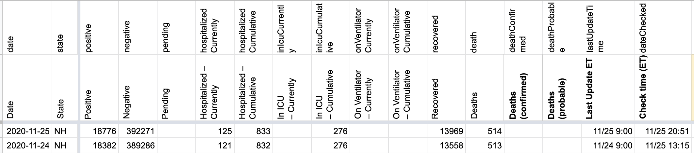 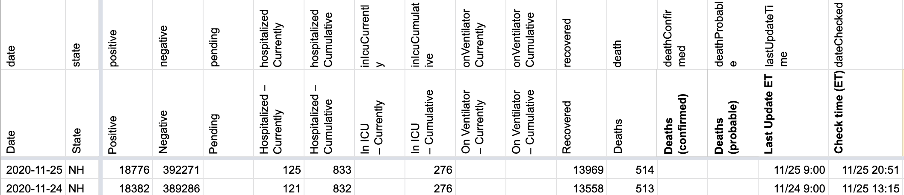 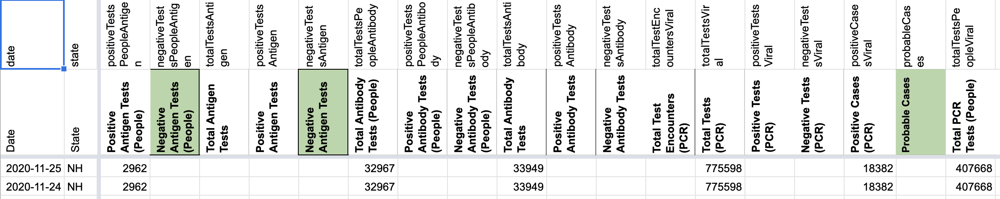 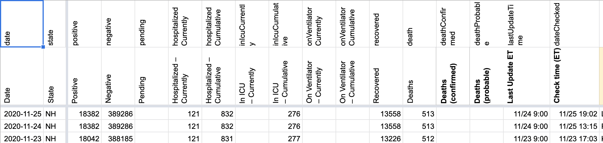
AFTER: 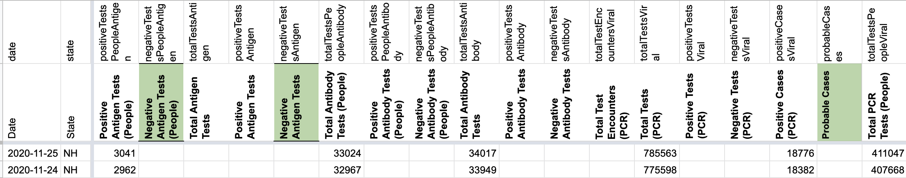
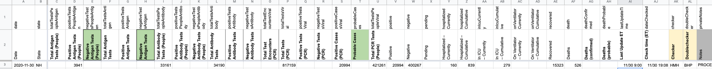
This issue has been automatically marked as stale because it has not had recent activity. It will be closed if no further activity occurs. Thank you for your contributions!
This issue has been closed because it was stale for 15 days, and there was no further activity on it for 10 days. You can feel free to re-open it if the issue is important, and label it as “not stale.”
BEFORE 9/27: 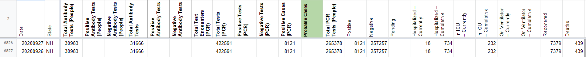